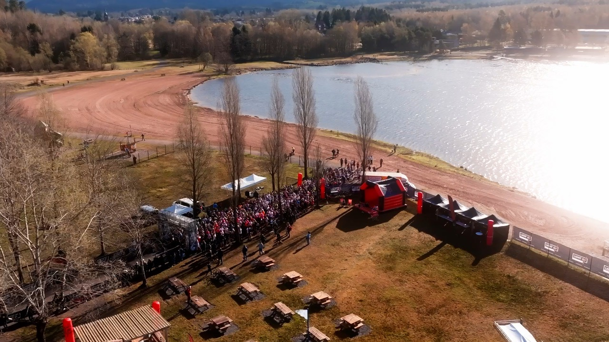
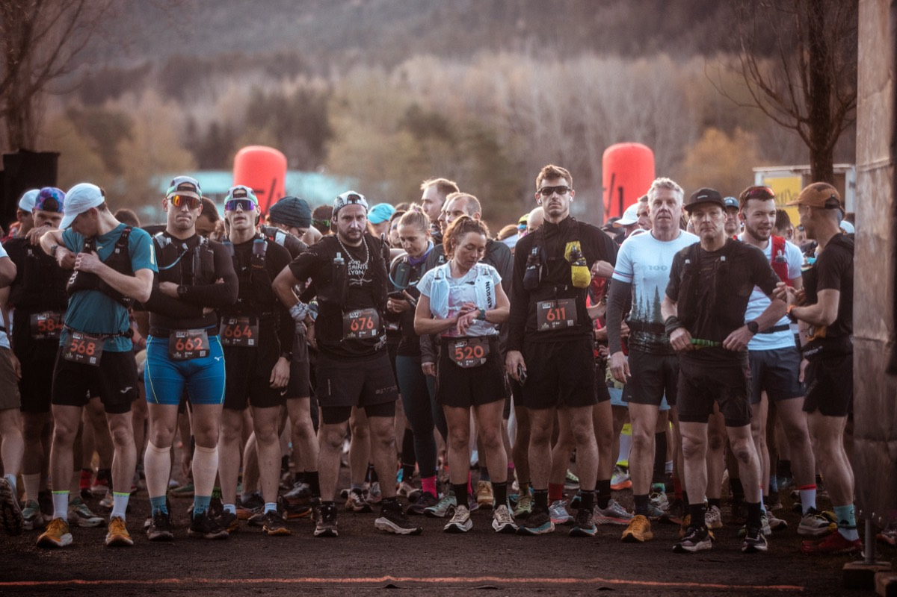
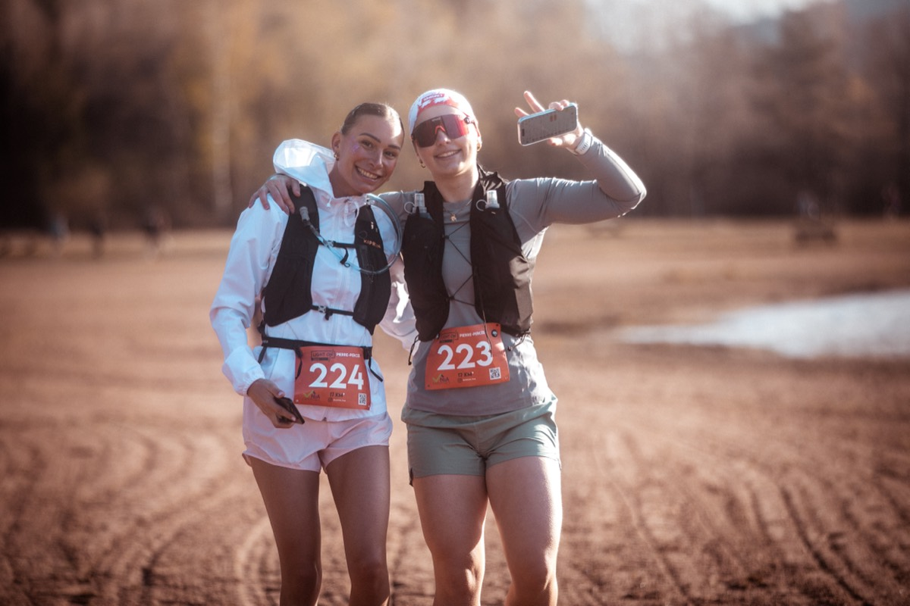
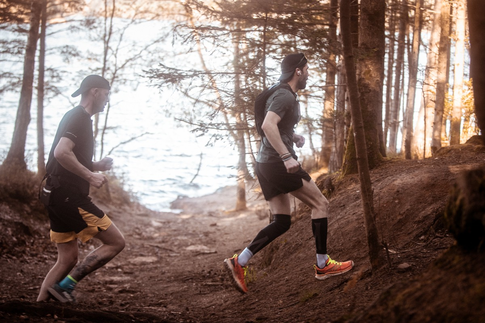
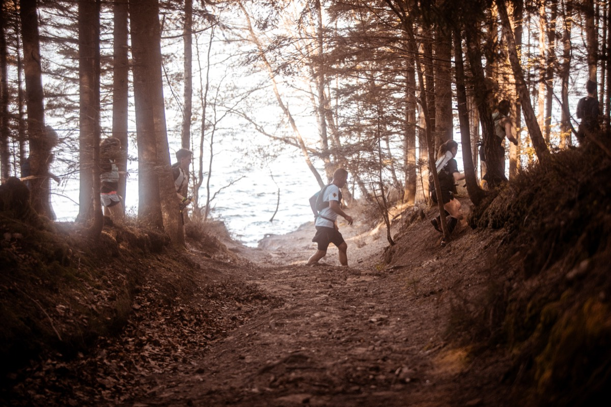
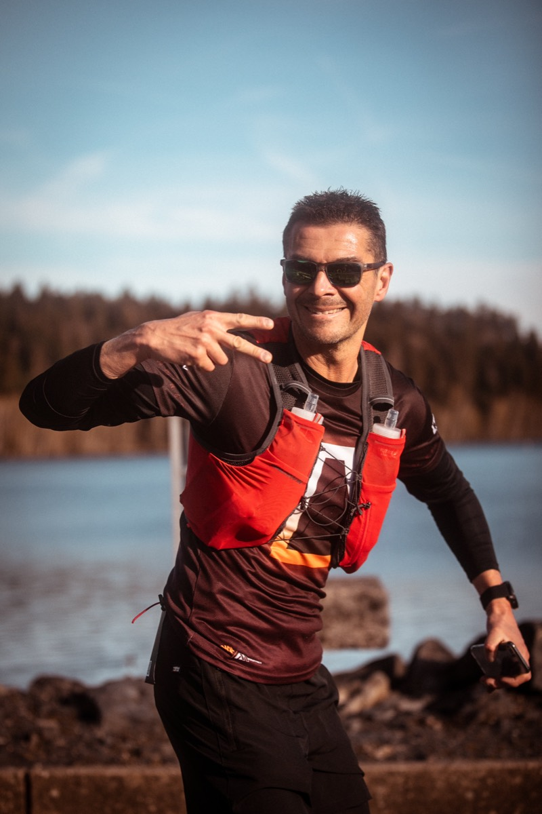
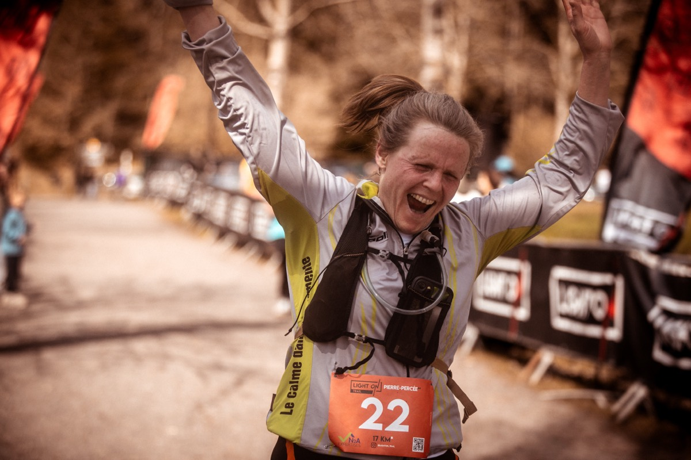
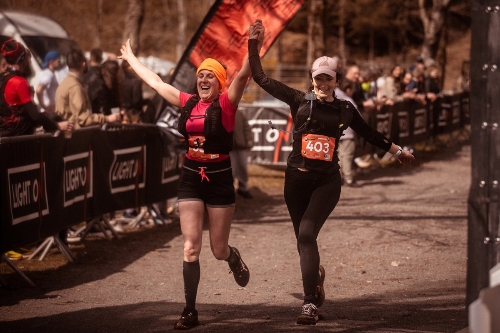
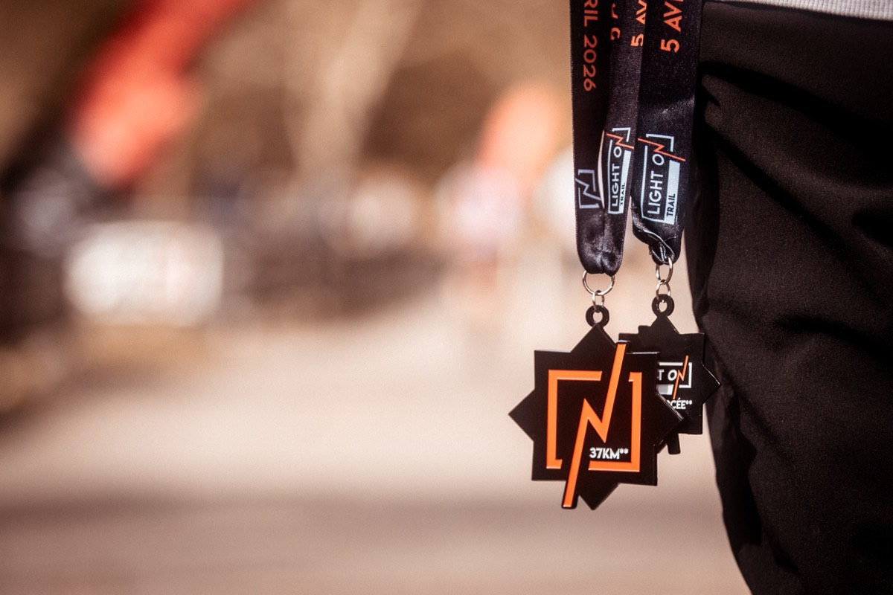

Accueil · Médias
L'événement en images.
Le film, les photos et les résultats de l'édition 2026. De quoi se remettre dans l'ambiance.
Le film
L'aftermovie 2026.
2 min 40 de départs, de sentiers et d'arrivées. Avec le son, c'est mieux.

Photos
Les visages de la course.
Une sélection d'instants saisis sur les parcours et au village. La galerie complète est partagée après chaque édition.












Résultats & archives
Classements et éditions passées.
Retrouvez les classements complets de l'édition 2026, à télécharger. Les résultats 2027 seront publiés ici à l'issue de la course.
Édition 2026 · 5 avril
17 KM*
411 finishers.
Hommes
- 1Erwan Petitdemange01:15:16
- 2Bastien Kalck01:17:11
- 3Baptiste Lespine01:19:27
Femmes
- 1Élodie Janiaud Friser01:37:02
- 2Célia Dargent01:37:21
- 3Melissa Barat01:37:23
Édition 2026 · 5 avril
37 KM**
223 finishers.
Hommes
- 1Valentin Delabarre03:05:07
- 2Charles Planet03:05:16
- 3Xavier Houllé03:05:20
Femmes
- 1Sarah Vieuille03:12:50
- 2Albane Lhuillier03:57:04
- 3Marianne Geisler03:59:46
Envie d'y figurer en 2027 ?
Les inscriptions sont ouvertes. Rendez-vous le 4 avril 2027.